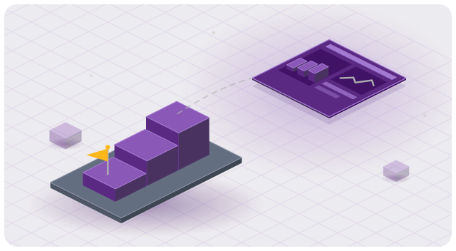

Build and deploy simulation web apps at scale
Use SAF (Solution Application Framework), a Python-centric framework, to turn complex, multi-domain PyAnsys workflows into guided, shareable web apps — without needing to become full-stack software engineers.
Where do you want to start?#

I’m new to SAF
Start here. Install prerequisites, scaffold your first solution, and run it locally in under 30 minutes.
→ Getting Started
I’m building a solution
Follow the method developer workflow: scaffold, build backend and frontend, run, test, and package your solution.
→ User guide
I’m deploying a solution
Choose your deployment target: desktop installer, single-node Windows service, or distributed Docker Compose / K3s.
→ Deployment